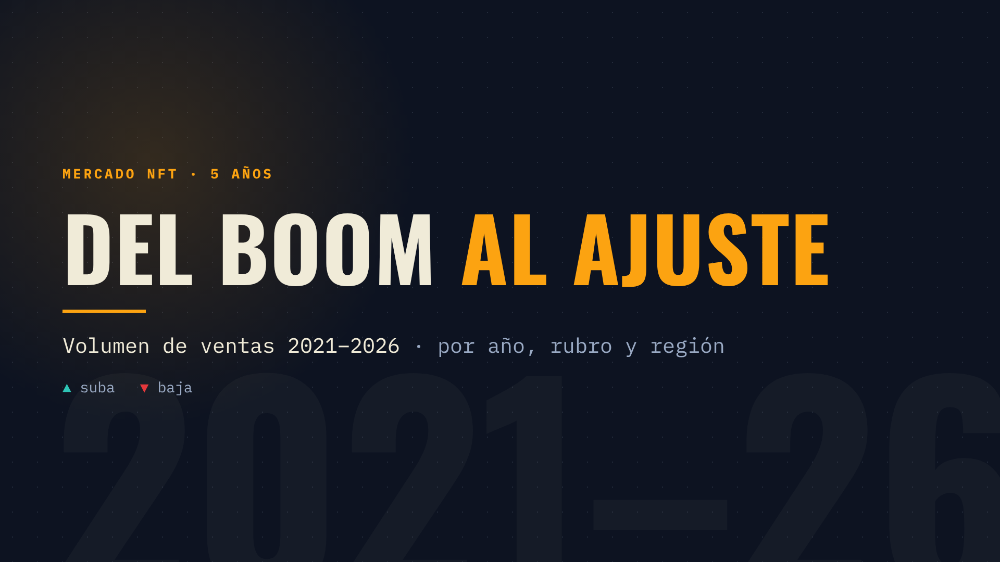
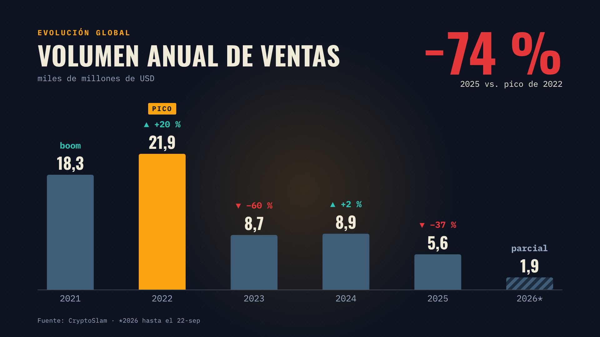
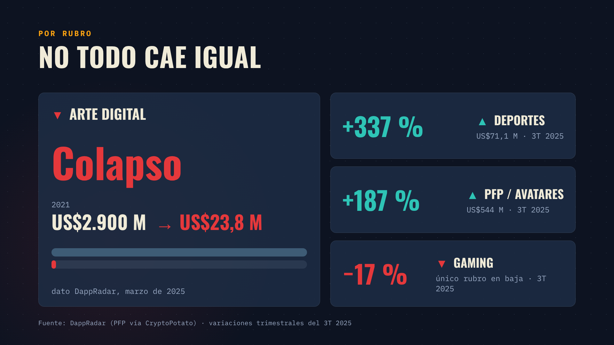
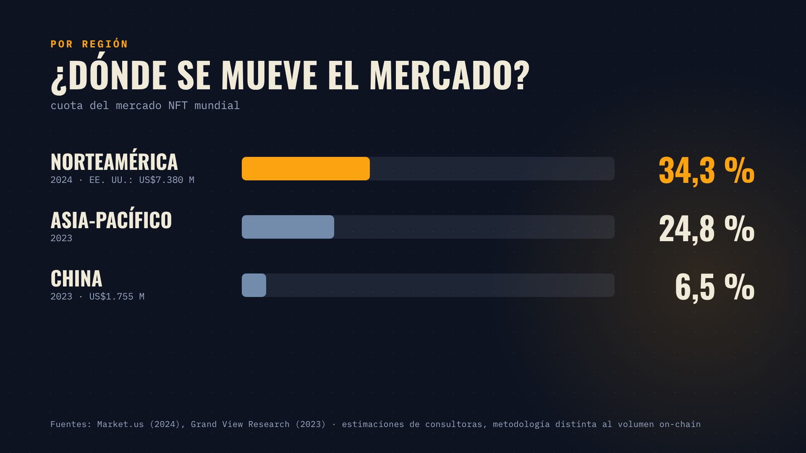
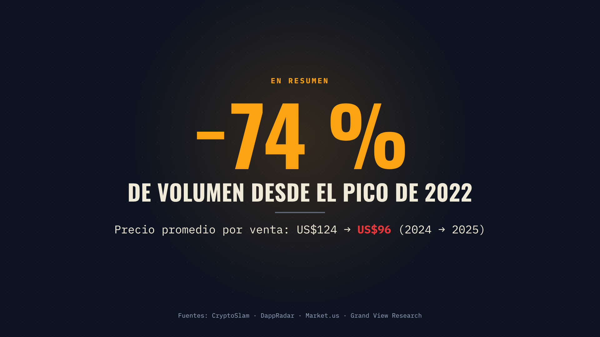

NFT: del boom al ajuste
Bocetos fijos · 16:9 · ~31 s · sin narración. Cada cuadro muestra el momento final de la escena; la animación llega después.

01: Título
0.0 a 4.0s
Título y métrica. Entra con un solo movimiento (sube + aparece) y queda quieto.

02: Evolución global
4.0 a 14.0s
Las barras crecen año por año con contador; el pico 2022 se enciende en ámbar y al final aparece el −74 %.

03: Por rubro
14.0 a 22.0s
La tarjeta de arte cae (la barra se vacía), luego entran deportes, PFP y gaming en cascada.

04: Por región
22.0 a 28.0s
Barras horizontales que se llenan con su porcentaje; nota de que son estimaciones de consultoras.

05: Cierre
28.0 a 31.0s
El −74 % vuelve como remate, con el precio promedio por venta y las fuentes.